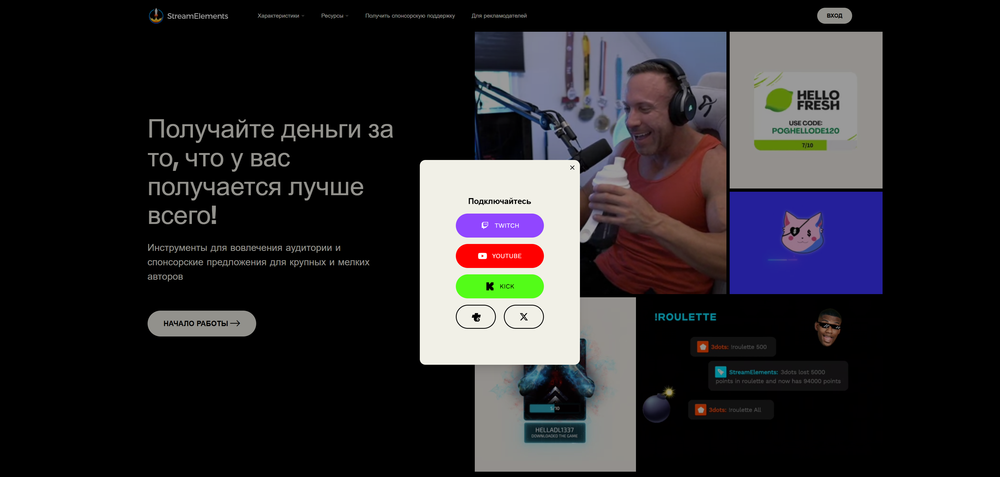
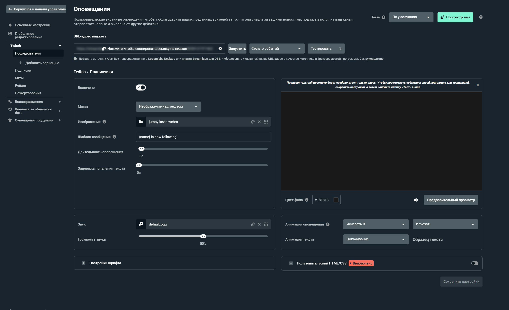

Уведомления (алерты) — это душа стрима. Они создают интерактивность, благодарят зрителей за поддержку и мотивируют других подписываться или донатить. StreamElements — один из самых популярных бесплатных сервисов для создания красивых уведомлений. В этом гайде мы настроим алерты с нуля и добавим их в OBS.
📑 Содержание
Что такое StreamElements?
StreamElements — это облачная платформа для стримеров, которая позволяет создавать оверлеи, алерты, чат-ботов и многое другое. В отличие от Streamlabs, StreamElements не требует установки отдельной программы — всё настраивается через браузер и работает как источник в OBS.
Основные возможности:
- Уведомления о подписках, донатах, рейдах, хостах.
- Готовые темы оформления или создание своих.
- Чат-бот с модерацией и командами.
- Магазин мерча и донат-страница.
- Статистика стрима.
Шаг 1: Регистрация и вход
Создайте аккаунт StreamElements
Перейдите на streamelements.com и нажмите «Login». Авторизуйтесь через Twitch, YouTube или Trovo — сервис автоматически привяжется к вашему стримерскому аккаунту. Подтвердите разрешения, которые запрашивает StreamElements (чтение данных канала, управление чатом и т.д.).

Шаг 2: Создание оверлея
Создайте новый набор оверлеев
После входа в личный кабинет перейдите в раздел «Overlays» в левом меню. Нажмите «Create New Overlay» и дайте ему название, например «Мой первый оверлей». Выберите разрешение (обычно 1920x1080) и нажмите «Create».
Шаг 3: Настройка уведомлений
Добавьте виджет алертов
Внутри созданного оверлея нажмите «Add Widget» и выберите «AlertBox». Это основной виджет для всех уведомлений. Он автоматически добавится на холст. Вы можете перемещать его, изменять размер и настраивать анимацию появления.
Теперь настройте, какие события будут вызывать уведомления:
- Подписка (Subscription) — новый подписчик на канале.
- Донат (Donation) — через встроенную донат-страницу StreamElements или PayPal.
- Рейд (Raid) — когда другой стример отправляет к вам зрителей.
- Хост (Host) — когда ваш канал хостят.
- Фоллов (Follow) — новый фолловер.
| Событие | Рекомендуемая длительность | Приоритет |
|---|---|---|
| Подписка / Донат | 8–10 секунд | Высокий |
| Рейд / Хост | 6–8 секунд | Средний |
| Фоллов | 4–5 секунд | Низкий |
Шаг 4: Кастомизация алертов
Сделайте уведомления уникальными
В настройках AlertBox для каждого события можно выбрать:
- Шаблон — готовый дизайн (их сотни в галерее).
- Звук — загрузите свой или выберите из библиотеки.
- Анимацию — появление, исчезание, эффекты.
- Текст — что будет написано (например, «{name} подписался на {tier} уровне!»).
🎨 Совет по дизайну
Не перегружайте алерты. Лучше простой, но стильный виджет с вашим логотипом и цветовой гаммой канала. Бесплатные шаблоны можно найти в галерее StreamElements или на сайтах вроде Nerd or Die.

Шаг 5: Добавление в OBS
Интеграция с OBS Studio
Вернитесь в раздел «Overlays» и нажмите на значок «Copy URL» рядом с вашим оверлеем. Это специальная ссылка, которая содержит все виджеты.
В OBS создайте новый источник: + → Источник браузера. Назовите его «StreamElements Alerts» и вставьте скопированный URL в поле «URL». Установите ширину и высоту (1920x1080). Нажмите «ОК».
Важно: поставьте галочку «Использовать аппаратное ускорение» и «Обновлять браузер, когда сцена становится активной».
🔗 «Источник браузера в OBS — это окно в мир интерактива. Всё, что вы настраиваете в StreamElements, мгновенно отображается на стриме без перезапуска».
Как протестировать уведомления?
Внутри настроек AlertBox есть кнопка «Test» для каждого события. Нажмите её, чтобы увидеть, как алерт выглядит на стриме. Также можно сделать тестовый донат самому себе через донат-страницу StreamElements (минимальная сумма — 1$).
💡 Дополнительные возможности StreamElements
- Чат-бот — настройте автоматические приветствия, команды (!дискорд, !ютуб), модерацию спама и ссылок.
- Магазин мерча — интегрируйте продажу футболок, кружек прямо на стрим.
- Донат-лидерборд — показывает топ донатеров за стрим/месяц.
- Счётчики целей — визуализируйте прогресс сбора средств на новое оборудование.
🎁 Бонус: готовые темы оверлеев
Если не хотите возиться с дизайном, в StreamElements есть раздел «Themes». Выберите понравившуюся тему, нажмите «Apply», и все виджеты (алерты, чат, цели) настроятся автоматически. Останется только скопировать URL в OBS.